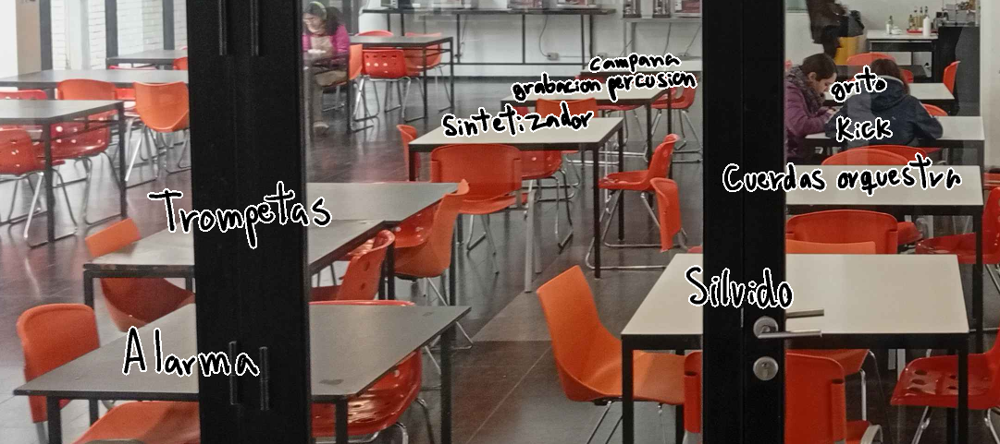

Para mi trabajo, utilizando la energia mecanica de las personas que asisten al casino, lo que yo propongo es sacar varias fotos de las mesas del casino,
en distintos tiempos para ver si gente se sienta en las mesas o no, cada mesa tiene asignado un sonido, el rango de mesas son las dos filas en el centro
lo que hice fue que en mis ratos libres durante el periodo de clase, fui sacando fotos de el casino, me habria gustado haber sacado mas fotos,
pero se me hace raro sacarle fotos a la gente y me senti un poco incomodo mientras sacaba las fotos
los sonidos que elegi son unos que utilizo seguido en mi musica y de un estilo de musica que me gusta, que se llama hardstyle que se caracteriza
por usar sonidos sintetizados y distorciondos y que eh estado practicando recientemente.